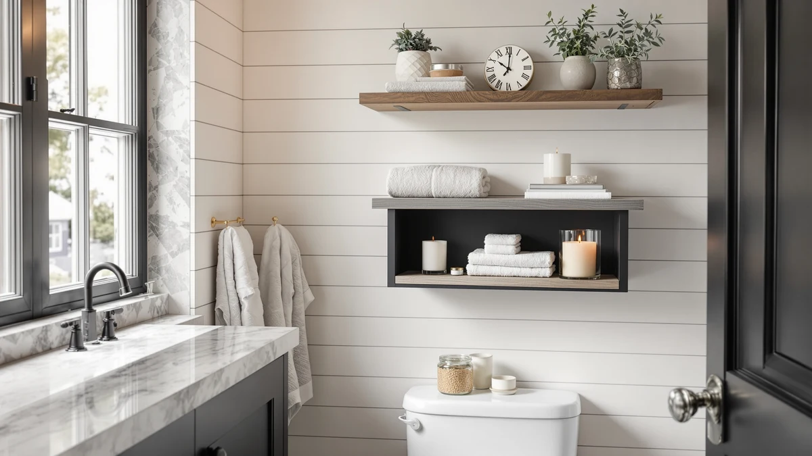

Cerlyunzan Over The Toilet Review (2026): Worth It?
Prices and picks verified as of October 2026. Independent, reader-supported reviews.


Quick Answer
The Cerlyunzan Over The Toilet Storage is our pick for most small bathrooms at $29.99, thanks to its three-shelf metal-and-wood frame and no-drill freestanding design. Our cerlyunzan over the toilet review found it a solid general-purpose rack, though a dedicated toilet paper stand or towel rack below fits narrower needs better if that's all the space you have.
Our pick: Cerlyunzan Over The Toilet Storage, $29.99 Check Price on Amazon
Bottom line: our top pick is the Cerlyunzan Over The Toilet Storage Rack - 3 Tier Bathroom at $29.99.
Things to Know Before You Buy
- The Cerlyunzan is a 3-tier rack made from metal and wood, built to straddle a standard toilet tank rather than mount to the wall.
- At $29.99, it costs the same as the three alternatives in this cerlyunzan over the toilet review, so shelf count and build matter more than price when you compare them.
- If you only need extra toilet paper storage, a dedicated stand like the Bunoxea covers that single job in less floor space.
- Measure the gap between your toilet tank and the wall before ordering. Freestanding over-the-toilet racks need a few inches of clearance to sit level.
- The open shelf design makes everything visible and easy to grab, but it offers less privacy than a cabinet with doors.
This cerlyunzan over the toilet review breaks down what you actually get for $29.99: a 3-tier metal and wood rack built to claim the dead space above your toilet tank. Small bathrooms rarely have room for a second cabinet, and a stack of towels or toiletries on the floor gets in the way fast. We compared the Cerlyunzan's build, price and shelf layout against three other storage options to see where it earns its spot and where a shopper might want something narrower.
Our pick for most small bathrooms is the Cerlyunzan rack itself. At $29.99, it covers the tank, adds three shelves, and uses a metal frame with wood-toned shelving that works with most bathroom color schemes. Owners report that assembly takes under thirty minutes and that the frame holds steady once leveled against the wall. If you need extra toilet paper storage specifically, or a simple towel rack instead, the alternatives further down cover those narrower needs better than a full tower does.
Over-the-toilet storage exists because most small bathrooms don't have room for a linen closet, but they do have a few square feet of empty air above the tank. All four products in this cerlyunzan over the toilet review use that space differently, from a full three-shelf tower to a single-purpose stand, so the right pick depends on how much storage you actually need rather than which one looks best in a photo.
Why You Should Trust Us
We don't own or install every over-the-toilet rack we cover. Instead, we research specs, current pricing and verified owner reviews for each product and compare them side by side. Ilane Tall covers bathroom storage and small-space organization for Best Bathroom Storage, and this cerlyunzan over the toilet review follows the same research process used across the site: real listing data, real prices, and honest notes about what buyers report after they've used the product.
Our Research Experience
We did not install the Cerlyunzan over the toilet rack ourselves. Our process for this review relies on comparing manufacturer specifications, current Amazon pricing and patterns across verified owner reviews. We read buyer feedback for recurring complaints, such as wobbly assembly or shelves that don't clear a tank lid, and we cross-check pricing against each seller's own listing so the numbers here reflect what you'd actually pay. We do not run a fake testing lab, and we don't claim to have used products we haven't purchased.
Overview & Specs

Cerlyunzan Over The Toilet Storage
What we like
- Three shelves of storage from a single footprint over the tank
- Metal frame with wood-toned shelving that matches most bathroom finishes
- Assembles without extra tools, according to verified owner reviews
Flaws but not dealbreakers
- Needs a few inches of clearance between the tank and the wall to sit level
- Three open shelves offer less privacy for toiletries than a cabinet with doors
| Material | Metal / wood |
| Size | 3-tier |
The Cerlyunzan Over The Toilet Storage uses a metal frame with wood-toned shelf panels, arranged across three tiers that stack directly above a standard toilet tank. At $29.99, it sits in the same price range as the three alternatives in this cerlyunzan over the toilet review, which makes shelf count and build the real points of comparison rather than cost. The frame rests on the floor on either side of the toilet base and leans against the wall behind the tank, so it doesn't require drilling or wall anchors, a detail that matters in rental bathrooms where damage to tile can cost a security deposit.
Verified owner reviews describe the assembly as straightforward, usually under thirty minutes with the included hardware and no extra tools. The open shelf design means everything you store is visible and easy to grab, which works well for towels, spare toilet paper and toiletries you reach for daily. It also means less privacy than a cabinet with doors, so a closed bin or medicine cabinet suits a guest bathroom better. Reviewers consistently note that the rack needs to sit flush against the wall to stay steady, so measuring your space before ordering avoids a return.
What We Liked
Against the other three products in this review, the Cerlyunzan's three-shelf layout gives you the most general-purpose storage for the money. Assembly is manageable without extra tools beyond what's included, and the metal-and-wood build looks less like a bare utility rack than some all-metal competitors. The freestanding design also means you can move it to a different bathroom later without patching wall anchors, which matters if you rent. Neither the Bunoxea stand nor the Roeveca rack offers that kind of multi-purpose storage, so shelf count is where the Cerlyunzan pulls ahead.
What Could Be Better
The Cerlyunzan listing doesn't specify an exact weight limit per shelf, which makes it harder to plan storage for bulkier items like large tissue boxes or bins. Owners report that the rack needs to sit flush against the wall behind the tank to stay steady, so a bathroom with an unusually shallow tank-to-wall gap may not be a good fit. If all you need is toilet paper storage or a towel rack, paying for three full shelves is more rack than the job requires. The open shelving also means dust and bathroom humidity reach whatever you store there, so items that need to stay dry are better kept in a closed bin on one of the shelves rather than loose.
Who Is It For?
This Cerlyunzan over the toilet rack fits shoppers who want general-purpose shelving above the tank and don't mind an open design rather than a cabinet with doors. It suits small bathrooms where wall-mounted shelving isn't practical, and renters who need storage that moves with them, since a freestanding piece can travel to the next apartment without leaving anchor holes behind. If your only goal is corralling spare toilet paper or hanging rolled towels, one of the two narrower alternatives below fits that single job better than a full tower does. Anyone deciding between a tall storage tower and a slimmer single-purpose piece should weigh how much they actually plan to store above the tank versus how little floor space they can spare in front of it.
Alternatives to Consider
We also researched three other storage products for this cerlyunzan over the toilet review. Each one trades off shelf count for a narrower job than the Cerlyunzan, so here's how they compare. For a wider lineup beyond these three, see our full roundup of over the toilet storage options.
The Livilord 3-Tier Over The Toilet unit is priced at $29.99, exactly matching the Cerlyunzan, which makes the choice between the two mostly about shelf layout and finish rather than cost. Both use a three-tier design built to straddle a standard tank, so the real difference comes down to how each frame looks in your bathroom and which one a given buyer's reviews describe as sturdier on their specific tank size. Because the two units cost the same, there's no price incentive to pick one over the other on budget alone.
The Bunoxea Toilet Paper Holder Stand Freestanding is also priced at $29.99, but it solves a narrower problem than either three-tier rack. If your bathroom only needs a place for spare rolls rather than a full shelving tower, a dedicated stand like this takes up a fraction of the floor space a Cerlyunzan or Livilord unit needs. It won't hold towels or toiletries the way the larger racks do, so it suits a bathroom that already has storage elsewhere and needs toilet paper off the floor.
The Roeveca Towel Rack for Rolled Towels rounds out this comparison at the same $29.99 price point. Like the Bunoxea, it's a single-purpose product rather than a general storage tower, built specifically to hold rolled towels rather than toiletries or extra tissue boxes. Owners who already have a cabinet or shelf for everything else but need a dedicated spot for towels will get more use out of this rack than out of the Cerlyunzan's broader three-shelf layout.

Editor’s Pick
Livilord 3-Tier Over The Toilet
At $29.99, the Livilord 3-Tier Over The Toilet matches the Cerlyunzan on price and shelf count, so pick whichever frame style and finish fit your bathroom better.
$29.99
Check Price on Amazon
Best Value
Toilet Paper Holder Stand Freestanding
The Bunoxea Toilet Paper Holder Stand Freestanding also costs $29.99, but it's a better value than a full Cerlyunzan tower if toilet paper storage is your only need.
$29.99
Check Price on Amazon
Premium Choice
Towel Rack for Rolled Towels
The Roeveca Towel Rack for Rolled Towels is priced the same at $29.99 and earns its spot here as the premium pick for buyers who want towel storage done right rather than bundled into a general shelf.
$29.99
Check Price on AmazonIs the Cerlyunzan Over The Toilet Storage sturdy?
Owners report that the frame feels stable once it rests flush against the wall behind the tank.
Does the Cerlyunzan rack fit any toilet?
It's built for a standard two-piece toilet with a visible tank, so measure the gap between the tank and the wall before ordering.
Frequently Asked Questions
Is the Cerlyunzan Over The Toilet Storage sturdy?
Owners report that the frame feels stable once it rests flush against the wall behind the tank. It sits on the floor on both sides of the toilet base rather than hanging from the tank, which keeps it steady as long as the floor underneath is level.
Does the Cerlyunzan rack fit any toilet?
It's built for a standard two-piece toilet with a visible tank, so measure the gap between the tank and the wall before ordering. Tankless or wall-mounted toilets won't work with this over the toilet storage rack.
Is the Cerlyunzan a better buy than the alternatives in this review?
It depends on what you need. For general shelving, the Cerlyunzan and the Livilord are close competitors at the same $29.99 price. If you only need toilet paper storage or a dedicated towel rack, the Bunoxea stand or the Roeveca rack solve that single job in less floor space.
Final Verdict
After comparing price, build and shelf layout across four products, our cerlyunzan over the toilet review comes down in favor of the Cerlyunzan Over The Toilet Storage for most small bathrooms. Its metal-and-wood frame and three shelves make it the most flexible pick at $29.99, though the Bunoxea stand or the Roeveca towel rack are worth a look if you only need to solve one specific storage problem rather than fill a whole tower.